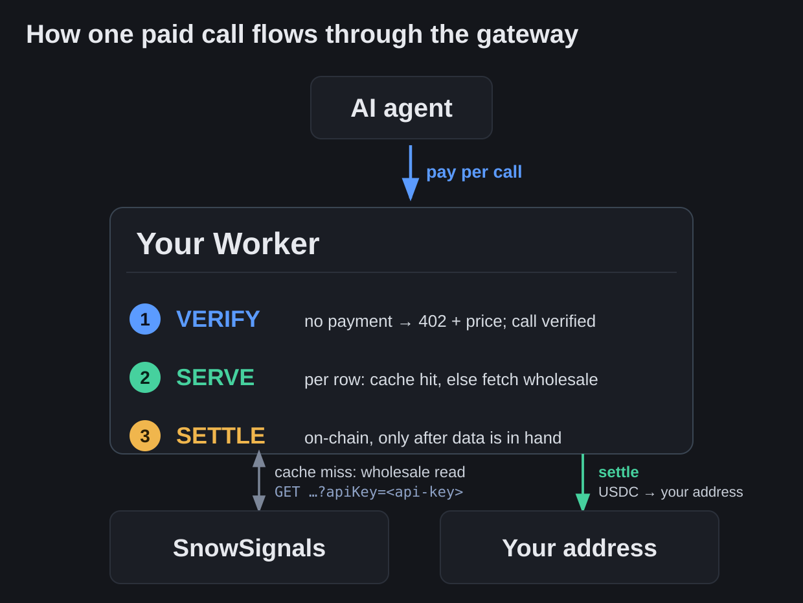

Date: 2026-09-10 · Author: @snowkidind (+ Claude) · Repo: snowsignals-x402
Most APIs make you sign up, hand over a card, and wait for a bill. This one takes payment at the door, one call at a time, from autonomous software providing data as a service. This article walks through building that: a small program, running on Cloudflare and live on your own domain, that resells SnowSignals market-phase readings for a fraction of a cent per call. It's a wholesale model: You keep the spread between what you charge and what the data costs you, and no user account nor invoice ever enters the picture.
The mechanism is a payment protocol called x402, and its name is a small piece of web history worth knowing. Every time your browser loads a page, the server answers with a three-digit code you rarely see. 200 means "here you go." 404 means "I can't find that." 500 means "I broke." These codes were laid down in the early 1990s, when the web was a handful of linked documents and everyone was still working out how machines should talk to each other over HTTP in the first place. (The land before modern APIs tells that story well.)
One number on the list, 402, got the label "Payment Required" and then nothing else. The authors figured the web would need to charge money someday, couldn't agree on how, and parked the code for later. It sat empty for thirty years. x402 is the protocol that finally uses it: a server replies to a request with a price, the caller pays, the request is retried, and the data comes back. Because it's built for software paying software, the software, (or an AI agent) can buy a single call on its own, with no account and no card on file.
Payment is in USDC, settled over Base, a network built and run by Coinbase. Coinbase also operates the service that checks and settles each payment on-chain, which is why this tutorial has you set up a Coinbase account. The prerequisites below cover that.
You won't write this from scratch. The code lives on GitHub as a template: a complete project, published so anyone can copy it, modify as desired, and run their own. In this exercise, you will clone the repository, change the handful of values that make it yours (your payout address, your price, your data account), and deploy.
An example of the finished version is live at x402.snowsignals.io. What follows is how it's built, stage by stage.
Three accounts you sign up for, plus one you fund:
You'll also want Node 22 or newer and a Base wallet holding a small amount of USDC for the live test at the end. The next section gets the local tooling in place; the specific credentials get created in the stages that use them.

Two economic ideas carry the whole design.
The first is your SnowSignals account. To the platform, your Worker is a single ordinary prepaid customer. It holds a read-only key, carries a balance you top up, and spends that balance every time it fetches a reading it doesn't already have. Your retail customers never touch it. Their USDC lands at your own Base address, separate from the balance that funds the wholesale reads. The gap between the two is your margin.
The second idea is that caching is where the margin actually comes from. A market phase on a closed candle is a fixed fact until the next candle closes. So the first buyer who asks for BTC on the 1h timeframe pays you retail, and you pay wholesale once to fetch it. The next hundred buyers who ask for the same thing in that hour pay you retail too, and you fetch nothing. You bill them for a row you already have. The warmer your cache runs, the wider the spread. That's the business.
Everything below is in service of those two ideas: keep the SnowSignals account safe, and cache aggressively so you buy wholesale as rarely as the data allows.
The whole gateway runs on Cloudflare, and it leans on three of their building blocks. If you've never used them, here's what each one is and the job it does in this project. The rest of the article assumes you have this picture in your head.
A Worker is a small program that runs on Cloudflare's edge, a copy of which runs in the data centers closest to whoever called it. A copy spins up to handle a request and goes away after. That's the whole gateway: one Worker holding all the routing, pricing, and payment logic. When someone calls your API, a Worker on Cloudflare somewhere near them runs your code.
The code is written in TypeScript, which is JavaScript with type annotations that the compiler checks before anything ships.
TypeScript is optional here. The runtime only ever runs JavaScript, so the types are purely a build-time safety net that compiles away. You could write this whole gateway in plain JavaScript and skip the compile step. Anything that compiles to WebAssembly can run inside a Worker, with Rust the best-supported of those (Cloudflare ships a
workers-rstoolchain), Go, C, Python.
To push the code from the repo to the worker, you use a CLI program on your local computer called Wrangler, Cloudflare's official tool for Workers. You install it with npm and run it on your local machine (the install command is in the next section). It talks to Cloudflare's API on your behalf, using a login you authorize once, so a command on your laptop turns into an action on your Cloudflare account. You'll use it to run the Worker locally while you develop (wrangler dev), to create the storage resources it needs, to store your secrets, and to ship the code (wrangler deploy).
Cloudflare's runtime is called workerd, and it's built on V8, the same engine inside Chrome. So it speaks web standards like
fetchandcrypto.subtleout of the box, and it isn't Node. A few Node conveniences only exist becausewrangler.jsoncturns on a compatibility layer (nodejs_compat), a detail that bites you exactly once, in the money-path signing (Section 5).
As for where the code lives: nowhere you can log into. (Visibility is possible, theres a section on it later) When you run wrangler deploy, Wrangler compiles and bundles all of src/ into a single optimized JavaScript file and uploads that bundle to Cloudflare, which copies it out to every data center on the network. Each incoming request runs the bundle in a fresh, lightweight V8 sandbox that starts in about a millisecond, so there are no cold starts to design around and no instance you patch or restart. You change code by editing your local src/ and deploying again, which replaces the bundle everywhere at once. Where the wrangler CLI runs is the source of truth; the deployed bundle is a build artifact of it.
A Worker is small on purpose, and a few limits come with that. The deployed bundle has to fit in about 1 MB gzipped on the free plan (10 MB on paid), which the x402 and payment dependencies push against, so it's a real number to watch on deploy. Each request runs in roughly 128 MB of memory with a tight CPU budget, which suits an I/O-bound gateway like this one and rules out heavy per-call computation. On its own, a worker is stateless, it has no filesystem but Cloudflare has storage products to solve this problem.
Is the running code public? No. Callers see your HTTP responses and nothing more; Cloudflare never exposes your source code or the deployed bundle. Your secrets don't get sent in the bundle:
HOUSE_API_KEYand the CDP (Coinbase) keys are injected at runtime by CLI:wrangler secret
Keys are sent to Cloudflare via wrangler, and are stored on platform as environment variables. They don't get pushed through the repo. that said there is a file that contains configuration data called wrangler.jsonc, which does contain some particulars of the setup but these are like coordinates, aka resource identifiers. The recipient's address (you) is public by design.
Cloudflare's Workers KV is a key-value store, which is about the simplest database there is: you put a value under a string key and later get it back by that key. It's spread across their whole network and tuned for fast reads, which is exactly what a cache wants. This is where your fetched SnowSignals data lives between requests. Each reading is stored under a key like boundary:BTC:1h:<close-time>.
One thing to keep in mind: KV is eventually consistent, so a value you just wrote can take a moment to be visible everywhere. That's fine for a cache. The worst case is that a row you fetched a second ago isn't visible to the very next request yet, so that request buys it again: a wasted fraction of a cent that corrects itself as soon as the write propagates.
A Durable Object (DO) is the odd one, and the most powerful. A Worker is stateless and runs in many copies at once, so it has nowhere to coordinate things that must happen one at a time. A Durable Object fills that gap. It's a tiny stateful object with a name, and Cloudflare guarantees exactly one instance exists for a given name across the entire network. Give two requests the same name and they reach the same instance, so it can serialize them. This gateway names one per currency. When a burst of buyers all ask for the same cold row, they land on the same Durable Object, and it makes sure only one wholesale fetch goes out while the rest wait for the result. That's the single-flight coordination that protects your margin under load.
DO's have a lot of features so they are worth taking a look at when you want to expand this, for instance, they have a small database, can hold state, alarms, manage connections, and more.
Net: the Worker is your gateway, KV is the cache that holds bought readings, and the Durable Object is the traffic cop that keeps a stampede of buyers from turning into a stampede of wholesale buys. Section 3 sets up the last two.
With the accounts from the last section in hand, set up locally. We tested this on Node 22 and Wrangler 4.130.0. Install Wrangler:
npm install -g wranglerYou can skip the global install and call it on demand as npx wrangler … instead; either way the repo lists Wrangler as a dev dependency, so the npm install below pulls it in too.
Three credentials the running gateway depends on get created later, in the stages that use them, and wired in as secrets at deploy time (Section 7): your SnowSignals API key (a read-only, url-mode credential that funds the wholesale reads), your Coinbase API key (which authorizes the payment checks and settlement), and a Base address you control to receive the USDC. The receive address only ever takes money in; the Worker never holds a key that can spend.
Clone the template and install:
git clone https://github.com/snowkidind/snowsignals-x402
cd snowsignals-x402
npm install
npm run typecheck && npm test # green before you touch anythingSign up at snowsignals.io and create an API key in url-key mode. API key creation is in the credentials section. To get some free credit, (Shows up as Atoms: not a crypto, just a way to internally account for things) scroll down and go to the fountain page link at the bottom of the page, play a few rounds and claim in the account tab on each round. This should get you up and testable. If you are confident that the product is for you, you may also just connect a wallet and buy some credit outright.
Double check the API-key is configured properly: The url-key mode carries a bare ?apiKey=<key> with no rolling nonce, which is the one that works across for this use.
Regarding the SnowSignals credit, this is the pool your Worker draws down as it serves. Keep an eye on it and top up before it bottoms out.
Two files hold everything you'll change.
Wrangler reads a config file at the repo root, wrangler.jsonc, which is where the Worker's name, its entry point, and its connections to the KV cache and Durable Object are declared. When this article points you at a value in wrangler.jsonc, that's the file it means, and your local Wrangler CLI tool is what acts on it. Here, it carries the deployment vars:
// wrangler.jsonc
"vars": {
"ORIGIN_URL": "https://snowsignals.io",
"FACILITATOR_URL": "https://api.cdp.coinbase.com/platform/v2/x402",
"PAY_TO": "0xYourReceiveAddress" // FORKERS: your OWN Base receive address
}PAY_TO ships as a placeholder. Replace it with your address before you deploy, or you'll be routing your customers' money to someone else's wallet.
src/config.ts holds the one knob that sets your business:
// src/config.ts
/** Retail = wholesale × this. Your margin. */
export const RETAIL_MULTIPLIER = 3;Three means you charge triple the wholesale rate. Set it wherever your market bears. This lives in source as a plain constant so it diffs and reverts cleanly, and there's no runtime flag to fat-finger in production.
Notice what you don't set: the actual per-row price. The Worker reads the live pricing model from SnowSignals' free /v1/api/phases endpoint, caches it for a day, and computes each quote from it. When SnowSignals changes its wholesale rate, your retail price tracks it automatically. You only ever own the multiplier.
The math, for one request: rows = |currencies| × |timeframes|, then retail = round(rows × base_rate × tier_multiplier) × RETAIL_MULTIPLIER. As of September 2026, at the current base rate and a 3× multiplier, a single row runs almost a cent. (about $0.0087) A buyer asking for allcurrencies across all timeframes pays for the full basket in one call.
Create the KV cache and the Durable Object you met above. In Cloudflare terms these are bindings: entries in wrangler.jsonc that give the Worker a name it can use in code to reach each resource. The repo already declares both. You provision the KV namespace once and paste back its id; the Durable Object needs nothing from you but is worth understanding.
Create the KV namespace and paste the id it prints into wrangler.jsonc:
npx wrangler kv namespace create PHASE_CACHE
# → copy the returned id into the kv_namespaces block, replacing the placeholderThe Durable Object comes pre-declared, meaning the template's wrangler.jsonc already carries its configuration, and it is created automatically. It's a binding (the name your code reaches it by) plus a migration entry, and wrangler deploy registers the object on your account automatically the first time you ship.
As covered above, this DO stores no data. Each instance holds a single in-flight fetch per currency, in memory, to fold a burst of identical cache misses into one wholesale read. Ten buyers hit the same cold row at once, one pays for the fetch, the other nine ride along. That coalescing is a direct line to your margin, so it earns its place in the stack; it's simply optimization.
Open src/rows.ts. This is the core, and it's worth reading even though you won't edit it, because it's where the money logic actually lives.
A request is a basket of rows, one per (currency, timeframe) pair. The pipeline treats every row independently:
The buyer pays retail for the whole basket. You get billed wholesale only for the rows you actually had to fetch. On a warm cache that's zero, and the entire retail payment is margin.
The cache keys are built so a stale reading can never be served. A boundary row (the settled phase from the last closed candle) is keyed by its next-close timestamp and cached until that close. When a new candle closes, the key changes on its own and yesterday's value simply stops being asked for. A live updates row is cached 60 seconds, which is as fast as the underlying reading refreshes anyway. Below that floor there's nothing newer to serve.
Each response the gateway returns carries a few headers for testing that report how the cache did on that call: X-Rows, X-Cache-Hit-Rows, and X-Cache (hit, miss, or partial). Those headers ride on the response the caller receives, so you see them directly only on calls you make yourself (the e2e suite, a curl). You can't read a buyer's response, so for live traffic cache effectiveness shows up instead in the cache_hit_rows recorded on each settlement (Section 8).
Here's the part people find fiddly, so take it slowly. The gateway speaks x402 version 2, which is header-based. The exchange goes:
PAYMENT-REQUIRED header.PAYMENT-SIGNATURE.PAYMENT-RESPONSE.The ordering is the safety property, and it's deliberate: verify → serve → settle. The Worker drives the x402 resource server's processHTTPRequest (verify, or issue the challenge) and processSettlement (settle) by hand, so the serve step sits between them. If the data fetch fails for any reason, settlement never runs and the buyer is never charged. A failed serve costs the buyer nothing. See src/gateway.ts for the exact sequence and src/x402server.ts for how the server is wired.
The price in the challenge comes from a dynamic-price callback, so the SDK quotes each request from the same live pricing model your serve path uses. The challenge also advertises the USDC EIP-712 domain ({ name: "USD Coin", version: "2" }, in config.ts), which the buyer's client needs to build the transfer-authorization signature. Leave it out and clients refuse to pay.
This one will cost you an afternoon if you hit it cold, so it's called out on its own.
The CDP facilitator authenticates every verify and settle call with a short-lived Ed25519 JWT. The obvious move is to let Coinbase's own SDK mint that JWT for you. It doesn't work inside a Worker. The SDK's JWT path pulls in jose and uncrypto, and those modules fail to initialize in the right order in the Workers bundle, leaving their crypto bindings undefined at runtime. You get a cryptic failure deep in the money path.
The fix is in src/cdpAuth.ts: sign the JWT directly against the runtime's native WebCrypto (crypto.subtle), which workerd supports for Ed25519. It mints a ~120-second Bearer token per facilitator call, scoped to that method and path, matching CDP's expected format. The money-path auth stays on first-party, runtime-native code with no fragile dependency chain. If you fork this, keep that file. Don't be tempted to "simplify" it back to the SDK helper.
An agent that's never heard of your service can still find it. Each metered route declares an x402 Bazaar discovery extension in its payment terms (buildBazaarDeclaration in x402server.ts). On a successful settlement the CDP facilitator reads that declaration and indexes your route in its public catalog, keyed by the route's canonical URL on your own domain. Because the URL is derived from your deployment's origin, a fork automatically lists under its own domain. One clean catalog entry per route, and buyers can discover you by capability.
For humans and for LLM agents, the repo also ships a static landing page in docs/ that you serve over GitHub Pages. It carries an llms.txt and an OpenAPI descriptor so a machine can read your endpoints, pricing, and response shape without guessing. Point a subdomain at the Pages site (the reference deployment uses x402.snowsignals.io) and set your own copy in docs/index.html. The template's pitch is already written for a reseller to adapt.
Three secrets never go in any file. Set them with Wrangler:
npx wrangler secret put HOUSE_API_KEY # your funded SnowSignals url-key
npx wrangler secret put CDP_API_KEY_ID
npx wrangler secret put CDP_API_KEY_SECRETThen ship it:
npx wrangler deployPoint your API subdomain (the reference uses pay.snowsignals.io) at the Worker, and your landing subdomain at the Pages site. First, prove it with the free routes, which need no payment:
curl https://pay.YOURDOMAIN/phases # pricing model + enabled currencies/tfs
curl "https://pay.YOURDOMAIN/phase/boundary?currency=BTC&tf=1h" # expect a 402 with a quoted priceA 402 carrying a sane price and your PAY_TO means the challenge side works. Now prove the money path end to end. The repo's e2e suite makes real cent-scale payments on Base against your live deployment:
GATEWAY_URL=https://pay.YOURDOMAIN \
PAYER_PRIVATE_KEY=0xYOUR_TEST_KEY \
npm run test:e2eBring a Base wallet holding about a dollar of USDC. The paid suite spends roughly five cents across a handful of calls, and it checks the things that matter: the 402 quotes the right price, a payment settles on-chain and returns a reading, a repeat of the same row comes back X-Cache: hit with no wholesale re-buy, and a multi-row basket returns exactly what was asked for. Keep that payer key out of your shell history and out of git. Pass it inline or export it from a file you don't commit.
If the cache test reads miss once in a while, re-run it. Workers KV is eventually consistent, so a write can occasionally lag its read. Everything else should be deterministic.
Once it's live you'll want to look inside it: check the accounting, watch a request go by, work out why a deploy misbehaved. The three pieces give you three very different levels of visibility, and it's worth knowing what each one will and won't show you.
PHASE_CACHE): full visibilityThe cache is the most transparent layer. Everything in it is listable and readable remotely with wrangler kv key .... Two kinds of thing live there.
The valuable one is your settlement ledger. Every paid call that settles writes a settle:<tx_hash> record holding the endpoint, kind, row count, amount, cache-hit count, and timestamp, keyed by its on-chain transaction hash. That's your accounting record, one entry per sale, and you can read any of them back:
wrangler kv key get "settle:0x70dcdc61…" --namespace-id <your-id> --remoteThe rest is cache: the price-model entry, a few warm boundary:* rows, the occasional updates:BTC:1h. Those expire on their TTL, so the set stays small and churns on its own. The Cloudflare dashboard also charts read, write, and storage over time.
wrangler.jsonc sets observability.enabled: true, which turns on Workers Logs. So your invocations are more than a live tail. They're retained and queryable in the Cloudflare dashboard (Observability → Logs / Invocations) and through the analytics API for the retention window, which is roughly three days. You get per-request status, console.log output, CPU time, and errors after the fact.
For the live view:
wrangler tail # real-time stream, runs in a terminal
wrangler deployments list # deploy historyThis is a property worth leaning on. Plenty of setups throw their logs away the moment a request ends; here Cloudflare keeps them for you, dashboard-side, so you can go back and read exactly what happened on a call that already finished.
CurrencySingleFlight): thin by designThis is the blind spot, and it's deliberate. The Durable Object stores nothing. It holds only the in-flight fetch promise in memory to coalesce concurrent misses, so between requests it's empty and there's no persistent state to inspect.
What you can see is the dashboard's DO metrics: invocation count, active objects, duration, and storage sitting at roughly zero bytes. Any console.log from inside the object flows into the same Workers Logs and wrangler tail stream as the Worker.
What you can't see is its state, because it has none. That's why you can't confirm the "many concurrent callers collapse to a single wholesale read" property from the gateway side. The object doesn't count its own coalescing. The proof of that net-one debit lives in your SnowSignals account's usage log, where the one wholesale read shows up, rather than anywhere in the gateway itself.
Once it's live, the template is yours to bend. The verify → serve → settle skeleton doesn't care what the serve step actually does, so the whole rail is reusable for almost anything you can meter. A few realistic directions:
The one boundary is the wholesale agreement. You're reselling someone else's data, so what the SnowSignals terms allow for redistribution and derived works is what sets the ceiling on any of this. Read them before you build a business on top.
The Worker's basic limits (bundle size, memory, no disk) were covered earlier. Two more edges only show up under real traffic, and both are worth knowing before you scale:
Cloudflare adjusts these numbers over time, so confirm the current figures in their docs before you plan around a specific limit.
Once your gateway is live, discovery does most of the work for you, but a few directories are worth a manual submission to widen who can find your service. Bazaar (Section 6) is the automatic one: once a call settles, your route is in the CDP catalog, and several aggregators pull from there, so your first paid call effectively lists you. The rest take a few minutes each.
/submit page; a listing from your own domain is free.market-data and crypto-data categories. It crawls Bazaar and the awesome-x402 list, and also takes a self-submit form.xpaysh/awesome-x402 is the community "awesome" list on GitHub, a few hundred entries with an AI-agent section. Open a pull request adding your service.Newer venues like x402scan, gold-402, and Merit-Systems/awesome-agentic-commerce keep appearing; check that one is active before spending time on it. One venue needs no submission at all: keep your llms.txt and OpenAPI descriptor valid and reachable, and LLM-facing scanners will discover them the way a crawler finds robots.txt, so a clean landing page catalogs itself.
PAY_TO with your own Base address before deploy. The shipped value is a placeholder.src/cdpAuth.ts. The Coinbase SDK's JWT signing fails to initialize inside a Worker. The hand-rolled WebCrypto version is there for a reason.new_sqlite_classes) or it won't run on the free tier.x402 protocol
Cloudflare
Payments and chain
SnowSignals and this template